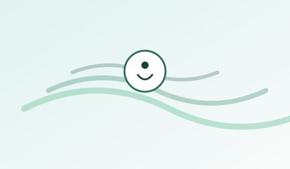

身心健康：穩定節律，真實支援
本頁提供面向一般學生的生活建議，並非醫療意見。若症狀持續或出現危機，請尋求專業服務，並聯絡適合你所在地的緊急號碼。
若你或他人面對即時危險，請先聯絡當地緊急服務，再透過港大官方渠道求助。

對許多人有用的日常模式
- 把睡眠寫進日程，而不是午夜剩下的「邊角時間」。
- 日光與活動——短步行常常比「完美健身計劃」更可持續。
- 連繫感——每天一次低壓力的社交觸點（訊息、共膳、社團）。
- 減少羞恥循環——若錯過截止日，盡早走官方補救路徑。
本頁提供面向一般學生的生活建議，並非醫療意見。若症狀持續或出現危機，請尋求專業服務，並聯絡適合你所在地的緊急號碼。
若你或他人面對即時危險，請先聯絡當地緊急服務，再透過港大官方渠道求助。
